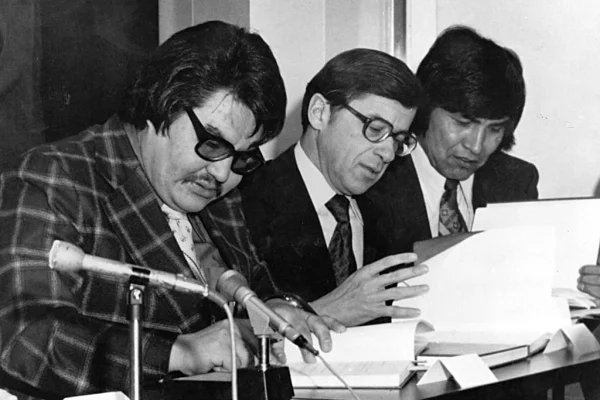
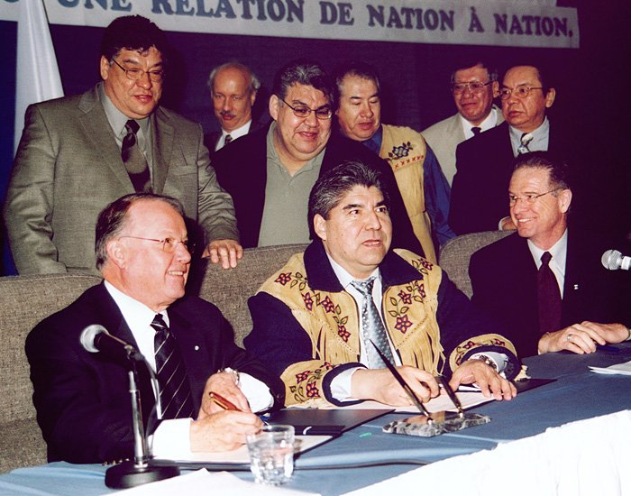
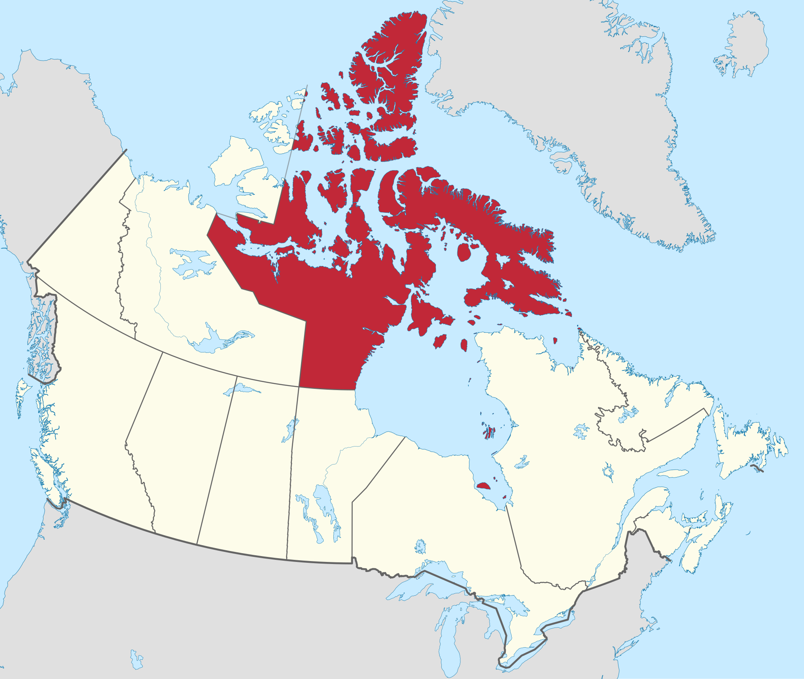
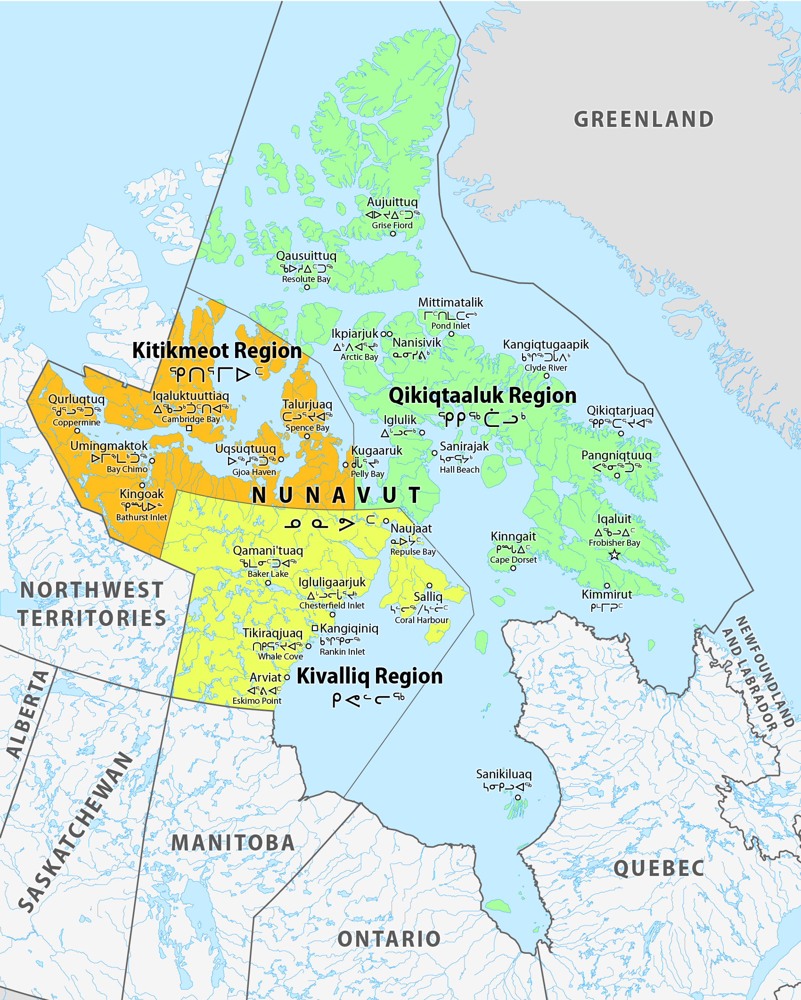
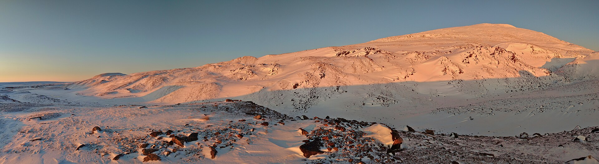
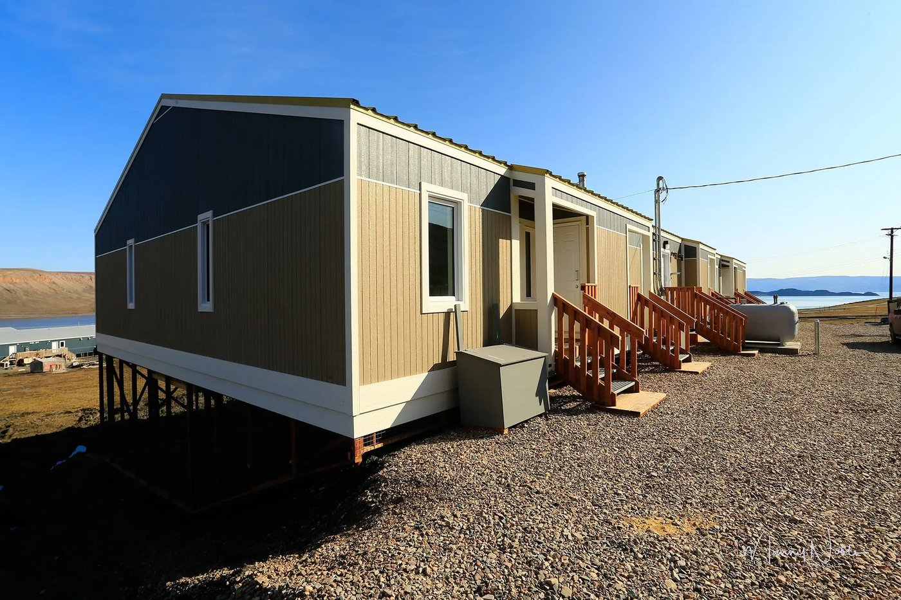

Géographie et éducation à la citoyenneté
10 / 11 territoires
Le territoire autochtone du Québec et du Canada
Territoire autochtone · National · L'autonomie et la gestion du territoire
- autochtone
- bande
- convention
- culture
- droits ancestraux
- nation
- nordicité
- revendication
- Eeyou Istchee, le territoire des Cris
- Le Nunavut

Mise en contexte
Le territoire autochtone est une réalité contemporaine, ici comme ailleurs dans le monde. L'angle retenu sur cette page est celui des territoires nordiques dont les nations ont conclu une entente avec le gouvernement du Québec ou du Canada. Un territoire autochtone est occupé par une nation qui y exerce une autonomie reconnue. À la suite d'ententes conclues avec les gouvernements, ces territoires relèvent d'une juridiction autochtone dans presque tous les domaines.
Nommer les choses correctement
Le vocabulaire compte, et il a changé. Voici les mots justes.
- Peuples autochtones : les descendants de ceux qui occupaient le territoire avant l'arrivée des Européens. Le terme englobe les Premières Nations, les Inuit et les Métis.
- Premières Nations : toutes les communautés autochtones autres que les Métis et les Inuit.
- Autochtone : se dit d'une personne ou d'un peuple issu des premiers occupants d'un territoire.
- Allochtone : se dit de quelqu'un qui ne descend pas d'un peuple autochtone.
- Amérindien : considéré comme inexact et souvent perçu comme colonialiste. On le remplace par « Premières Nations ».
- Indien : considéré comme incorrect et offensant. Il ne subsiste que dans des contextes juridiques précis, comme le nom de la Loi sur les Indiens, qui existe toujours.
Source : Service national du RÉCIT en univers social, d'après Paroles autochtones de Radio-Canada et l'organisme Mikana
Qui sont les peuples autochtones
La Constitution canadienne reconnaît depuis 1982 trois groupes de peuples autochtones. Ces catégories servent au droit et aux statistiques, mais elles ne disent pas comment les gens se définissent eux-mêmes : une personne se dit d'abord innue, wendat ou inuk. Selon l'Organisation des Nations unies, un peuple est autochtone si trois conditions sont réunies : l'attachement à la terre de ses ancêtres, le maintien d'une culture distincte de celle de la majorité, et un sentiment d'appartenance à sa nation.
Les onze nations du Québec
Onze nations autochtones vivent au Québec aujourd'hui. Huit appartiennent à la famille linguistique algonquienne : les Abénakis, les Anishinabeg, les Atikamekw, les Eeyouch, les Wolastoqiyik, les Mi'gmaq, les Innus et les Naskapis. Deux appartiennent à la famille iroquoienne : les Wendat et les Kanien'kehá:ka. S'ajoutent les Inuit, de la famille inuite-aléoute.
Attention au piège : « algonquien » et « iroquoien » désignent des familles de langues, pas des nations. Dire d'une personne qu'elle est algonquienne revient à dire d'un Espagnol qu'il est latin.
Réserve, bande et droits ancestraux
Une réserve est une parcelle de terre mise de côté par le gouvernement fédéral pour une Première Nation. Le système est encadré par la Loi sur les Indiens. Les Inuit et les Métis n'ont pas de réserves. Un conseil de bande administre une communauté. Il détient des pouvoirs en éducation, en services sociaux et en santé, et prend ses décisions sur son territoire. Les droits ancestraux sont les pratiques, les traditions et les coutumes qui caractérisent la culture d'une nation et qui étaient exercées avant l'arrivée des Européens. Ce sont des droits que des peuples autochtones détiennent parce qu'ils occupent et utilisent depuis très longtemps les terres de leurs ancêtres.
Eeyou Istchee, la terre du peuple
Eeyou Istchee signifie « la terre du peuple » en langue crie. Le territoire traditionnel s'étend sur plus de 400 000 kilomètres carrés, soit environ les deux tiers de la France. Il occupe la rive est de la baie James et le sud-est de la baie d'Hudson, avec les lacs et les rivières qui s'y déversent, et il déborde en Ontario.
Onze communautés y vivent, et plus de 300 zones de trappage, de chasse et de pêche y sont rattachées. Chacune est confiée à un maître de trappe qui en répond devant la communauté, un système de gestion du territoire qui existait bien avant les cartes gouvernementales.
Les grandes ententes
En 1975, les Cris et les Inuit signent avec les gouvernements du Québec et du Canada la Convention de la Baie-James et du Nord québécois. Ce traité moderne permet au Québec de poursuivre la construction des barrages de la Baie-James. En échange, il reconnaît des droits particuliers aux deux nations et prévoit une indemnité de 225 millions de dollars étalée sur 20 ans, qui leur permet de prendre en charge la santé, les services sociaux et l'éducation. Les Naskapis signent à leur tour la Convention du Nord-Est québécois en 1978.
Dans les années 1980 et 1990, les Cris soutiennent devant les tribunaux que le Québec ne respecte pas la Convention et qu'il ne les consulte pas assez sur l'exploitation hydroélectrique, minière et forestière. De nouvelles négociations s'ouvrent, et la Paix des Braves est signée en 2002. Cette entente de nation à nation prévoit une part des retombées de 3,6 milliards de dollars sur 50 ans, une plus grande autonomie financière et la collaboration des Cris au développement du Nord. Elle met fin aux contestations judiciaires et permet la construction du complexe de l'Eastmain.
Source : Service national du RÉCIT en univers social

Source
A CONFIRMER, Signature de la Convention de la Baie-James et du Nord quebecois, 1975, Fournie par l'enseignant. Licence : A CONFIRMER.
Source
A CONFIRMER, Signature de la Paix des Braves, 2002, Fournie par l'enseignant. Licence : A CONFIRMER.Le développement hydroélectrique, deux lectures
L'hydroélectricité utilise une ressource renouvelable, mais un complexe de l'ampleur de celui de la Baie-James transforme tout un territoire. Des rivières ont été détournées, d'autres ont vu leur débit fortement modifié, et des terres entourant les lacs ont été inondées.
Sur le plan social
L'inondation touche des territoires de chasse, de pêche et de piégeage. Le lien entre la culture crie et ces activités est très fort, si bien qu'une indemnité financière ne remplace pas ce qui est perdu. Un mode de vie qui s'est construit sur des millénaires en est durablement affecté.
Sur le plan environnemental
La mise en eau d'un réservoir met en circulation le mercure présent dans les sols et la végétation inondés. La teneur en mercure des poissons augmente, un phénomène qui peut durer de 10 à 35 ans selon les espèces et les réservoirs. Les gens qui mangent ces poissons sont touchés.
Sur le plan économique
Les ententes ont apporté des emplois de chantier, des indemnités et des revenus durables. Air Creebec, fondée en 1982 et entièrement propriété crie depuis 1988, emploie aujourd'hui plus de 400 personnes, dont un tiers sont membres des Premières Nations. C'est le résultat direct de cette autonomie financière.
Se déplacer au Nord-du-Québec
La route Billy-Diamond, longue de 620 kilomètres, relie Matagami à Radisson. Construite entre 1971 et 1974 pour amener la machinerie aux chantiers, elle est pavée et déneigée sur toute sa longueur et peut supporter des charges de 500 tonnes. Elle s'appelait route de la Baie-James jusqu'en 2020.
La route du Nord, inaugurée en 1993, relie Chibougamau à la route Billy-Diamond. Elle a été construite pour la centrale de l'Eastmain et elle ouvre aussi le secteur à l'industrie forestière. Le seul service sur son parcours est le village cri de Nemaska, au kilomètre 296. La Transtaïga est une route gravelée de 582 kilomètres qui mène à la centrale Brisay, plus 84 kilomètres le long du réservoir de Caniapiscau. Au bout, la ville la plus proche se trouve à 745 kilomètres.
Le Nunavut
Le Nunavut signifie « notre terre » en inuktitut, et ses habitants sont les Nunavummiut. C'est le plus récent, le plus vaste et le plus nordique des territoires du Canada, officiellement créé le 1er avril 1999.
Il couvre 1 936 113 kilomètres carrés de terre et 157 077 kilomètres carrés d'eau, soit 21 % de la superficie du pays. Il comprend des terres continentales, la majorité de l'archipel Arctique et toutes les îles de la baie d'Hudson, de la baie James et de la baie d'Ungava. Trois régions le composent, le Qikiqtaaluk, le Kivalliq et le Kitikmeot, avec des différences géologiques marquées et des dialectes distincts de l'inuktut.
Source : Atlas des peuples autochtones du Canada

Source
MapGrid, Nunavut in Canada 2, Wikimedia Commons. Licence : Creative Commons BY-SA 4.0.
Source
Maximilian Dörrbecker ( Chumwa ), Map of the Nunavut regions, Wikimedia Commons. Licence : CC BY-SA 2.5.
Source
The Cosmonaut, Nuluujaak Mountain, Wikimedia Commons. Licence : CC BY-SA 2.5 ca.Iqaluit
Source
Ansgar Walk, Leg Building Iqaluit 2000-08-27, Wikimedia Commons. Licence : CC BY-SA 2.5.Iqaluit est la capitale, située près de la pointe nord-est de la baie Frobisher, au sud de l'île de Baffin. Elle compte environ 7 500 habitants, ce qui en fait la plus grande ville du territoire. Fondée comme poste de traite dans les années 1940, elle devient capitale en 1999 et abrite l'Assemblée législative. Plus de la moitié des habitants parlent une langue autochtone, surtout l'inuktitut et l'inuinnaqtun. Le paysage est englacé huit mois par année, le sol repose sur le pergélisol, et la température de janvier descend parfois sous les moins 35 degrés.
L'accord de 1993 et la dévolution de 2024
L'Accord sur les revendications territoriales du Nunavut, négocié pendant plus de dix ans et signé en 1993, reconnaît les droits des Inuit sur leurs terres ancestrales et sur la gestion de leur environnement, ainsi que leur droit à l'autonomie gouvernementale. C'est lui qui mène à la création du territoire en 1999.
Le passage du Nord-Ouest
Le passage du Nord-Ouest relie l'Atlantique et le Pacifique à travers l'Arctique canadien. En vertu de l'accord de 1993, le Nunavut exerce un certain contrôle sur la navigation dans ces eaux et peut veiller au respect des normes environnementales et de sécurité. Or la fonte des glaces rend ce passage de plus en plus accessible aux navires commerciaux. Ce qui était une voie impraticable devient une route rentable, ce qui donne au territoire une importance stratégique nouvelle.
Comparer les deux territoires
Eeyou Istchee et le Nunavut, sept critères
Choisis un critère
Eeyou Istchee et le Nunavut se ressemblent par leur immensité et leur nordicité, mais leurs modèles politiques diffèrent. Parcours les sept critères avant de répondre.
Vivre au Nunavut
L'insécurité alimentaire
Aucune route ne relie le Nunavut au sud. Les liaisons aériennes assurent le lien vital, mais l'aller-retour entre Montréal et Iqaluit coûte près de 2 500 dollars. Les cargos ne livrent qu'en été, car les glaces bloquent la navigation le reste de l'année. Ce coût se retrouve dans le prix des aliments. Au Nunavut, une large majorité des Inuit vit une situation d'insécurité alimentaire, une proportion sans commune mesure avec le reste du pays. Plusieurs causes s'additionnent : l'éloignement des communautés, le coût d'expédition et de stockage des aliments périssables, et la situation socioéconomique.
Construire sur un sol qui dégèle

Source
A CONFIRMER, Maison sur pilotis d'acier au Nunavut, Fournie par l'enseignant. Licence : A CONFIRMER.Au Nunavut, on bâtit en tenant compte du pergélisol, ce sol gelé en permanence qui doit rester solide sous la maison. Or les changements climatiques le font dégeler dans des régions où cela ne se produisait pas, ce qui rend les fondations instables. Il serait impossible de couler une fondation classique dans le pergélisol : le béton en serait irrémédiablement endommagé. Plusieurs bâtiments d'Iqaluit reposent donc sur des pilotis d'acier ancrés jusqu'à une trentaine de pieds de profondeur, ce qui les protège des mouvements du sol.
Les noms qui reviennent
La toponymie, c'est-à-dire l'ensemble des noms de lieux, raconte qui a nommé le territoire. Depuis les années 1960, la Commission de toponymie du Québec inventaire et officialise des milliers de noms géographiques autochtones.
Des nations bien vivantes
Pour finir, quelques personnes dont le travail se poursuit aujourd'hui. Eva Ottawa, atikamekw, juriste et ancienne grande chef de sa nation. Louis-Karl Picard-Sioui, wendat, écrivain et commissaire d'expositions. Alanis Obomsawin, abénakise, cinéaste, autrice du documentaire Kanehsatake, 270 ans de résistance. Stanley Vollant, innu, chirurgien et marcheur au long cours. Elisapie Isaac, inuk, autrice-compositrice-interprète. Le 30 septembre est la Journée nationale de la vérité et de la réconciliation.
Sources
- Service national du RÉCIT en univers social
- Secrétariat aux relations avec les Premières Nations et les Inuit
- Statistique Canada, Recensement de 2021, peuples autochtones
- Atlas des peuples autochtones du Canada
- Relations Couronne-Autochtones, transfert des responsabilités au Nunavut
- Gouvernement du Nunavut, le transfert des responsabilités
- Commission de toponymie du Québec
- Mikana, organisme de sensibilisation aux réalités autochtones